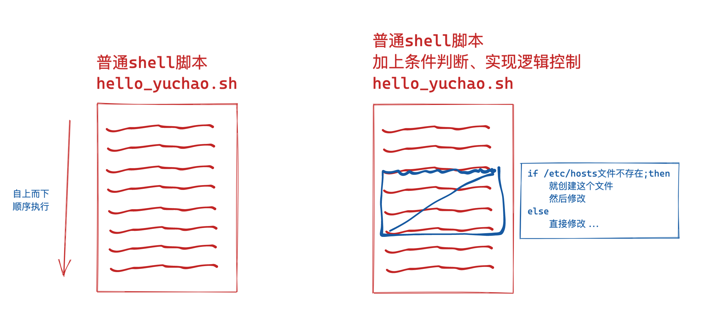
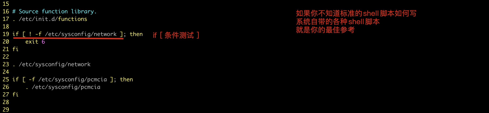
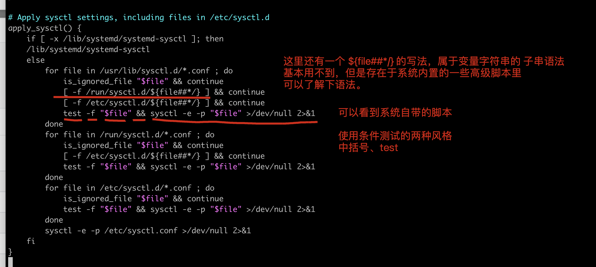
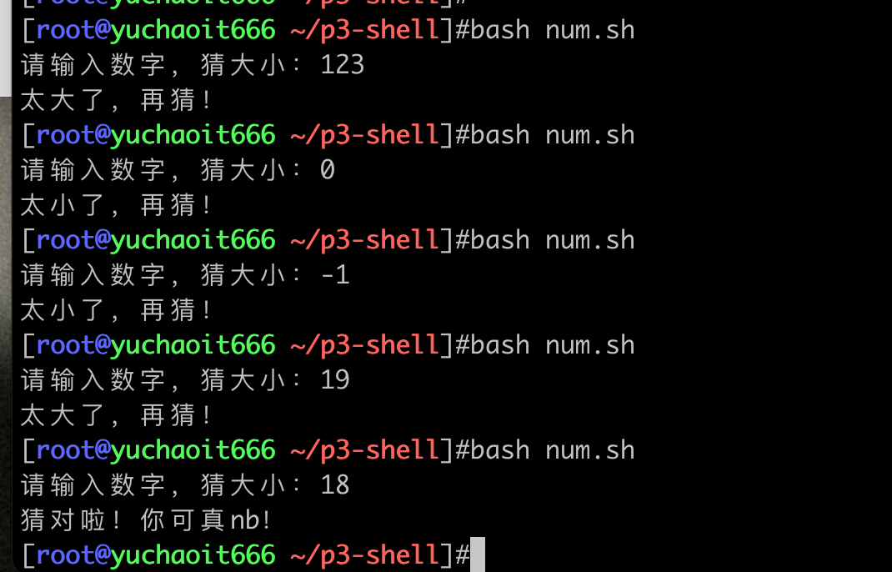
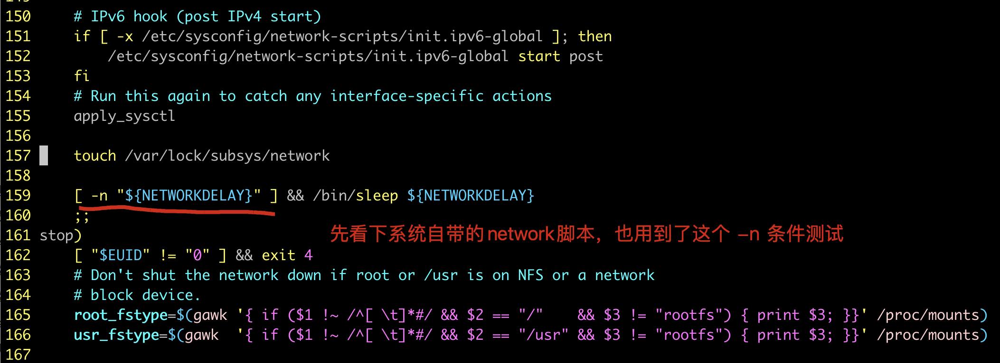

03-条件判断
我们目前写的shell脚本都是按照顺序，自上而下的，依次读取命令，且执行。
但是如果你要控制程序的执行顺序，修改这个顺序，那就得对脚本进行逻辑控制。
那么就必须得进行条件判断了。
坑记录。
1.务必注意，语法，中括号，条件测试符号左右两边的空格，别漏了。
2.条件判断里，关于变量是否添加双引号、本质上不一样的。。。。

0.学前预览
先看下，系统自带的脚本，shell的语法，在你学习了之后，就看得懂了，也可以模仿着写。

系统自带脚本
shell字符串变量的子串功能，用的极少，因为shell字符串变量本身处理起来，不太方便，看看语法就行。
关于字符串子串的功能，建议以后去学python再去体验子串的强大。

1.基于文件进行条件判断
我们这里先来学习这个条件判断的语法，下一步才进入if语句的学习。
常用参数
| 参数 | 解释 | 举例 |
|---|---|---|
| -e | 文件或目录存在就是true | [ -e filepath ] |
| -s | 文件存在且只要有一个字母就是true | [ -s filepath ] |
| -f | 文件存在且是普通文件类型就是true | [ -f filepath ] |
| -d | 文件存在且是目录类型就是true | [ -d filepath ] |
| -r | 文件存在且有read权限就是true | [ -r filepath ] |
| -w | 文件存在且有write权限就是true | [ -w filepath ] |
| -x | 文件存在且有x权限就是true | [ -x filepath ] |
| -- | -- | -- |
| -- | -- | -- |
更多参数
做好笔记即可，看来回来查查
test 命令最短的定义可能是评估一个表达式；如果条件为真，则返回一个 0 值。如果表达式不为真，则返回一个大于 0 的值 — 也可以将其称为假值。检查最后所执行命令的状态的最简便方法是使用 $? 值。
参数：
1. 关于某个文件名的『类型』侦测(存在与否)，如 test -e filename
-e 该『文件名』是否存在？(常用)
-f 该『文件名』是否为文件(file)？(常用)
-d 该『文件名』是否为目录(directory)？(常用)
-b 该『文件名』是否为一个 block device 装置？
-c 该『文件名』是否为一个 character device 装置？
-S 该『文件名』是否为一个 Socket 文件？
-p 该『文件名』是否为一个 FIFO (pipe) 文件？
-L 该『文件名』是否为一个连结档？
2. 关于文件的权限侦测，如 test -r filename
-r 侦测该文件名是否具有『可读』的属性？
-w 侦测该文件名是否具有『可写』的属性？
-x 侦测该文件名是否具有『可执行』的属性？
-u 侦测该文件名是否具有『SUID』的属性？
-g 侦测该文件名是否具有『SGID』的属性？
-k 侦测该文件名是否具有『Sticky bit』的属性？
-s 侦测该文件名是否为『非空白文件』？
3. 两个文件之间的比较，如： test file1 -nt file2
-nt (newer than)判断 file1 是否比 file2 新
-ot (older than)判断 file1 是否比 file2 旧
-ef 判断 file2 与 file2 是否为同一文件，可用在判断 hard link 的判定上。 主要意义在判定，两个文件是否均指向同一个 inode 哩！
4. 关于两个整数之间的判定，例如 test n1 -eq n2
-eq 两数值相等 (equal)
-ne 两数值不等 (not equal)
-gt n1 大于 n2 (greater than)
-lt n1 小于 n2 (less than)
-ge n1 大于等于 n2 (greater than or equal)
-le n1 小于等于 n2 (less than or equal)
5. 判定字符串的数据
test -z string 判定字符串是否为 0 ？若 string 为空字符串，则为 true
test -n string 判定字符串是否非为 0 ？若 string 为空字符串，则为 false。
注： -n 亦可省略
test str1 = str2 判定 str1 是否等于 str2 ，若相等，则回传 true
test str1 != str2 判定 str1 是否不等于 str2 ，若相等，则回传 false
6. 多重条件判定，例如： test -r filename -a -x filename
-a (and)两状况同时成立！例如 test -r file -a -x file，则 file 同时具有 r 与 x 权限时，才回传 true。
-o (or)两状况任何一个成立！例如 test -r file -o -x file，则 file 具有 r 或 x 权限时，就可回传 true。
! 反相状态，如 test ! -x file ，当 file 不具有 x 时，回传 true
结合test命令
写法1
用test 条件语句
为真
[root@yuchaoit666 ~/p3-shell]#touch yuchaoit.log
[root@yuchaoit666 ~/p3-shell]#
[root@yuchaoit666 ~/p3-shell]#
[root@yuchaoit666 ~/p3-shell]#test -f "yuchaoit.log" && echo "true" || echo "false"
true
为假
[root@yuchaoit666 ~/p3-shell]#test -f "666yuchaoit.log" && echo "true" || echo "false"
false
写法2
用[ 条件语句 ]
[root@yuchaoit666 ~/p3-shell]#[ -f "666yuchaoit.log" ] && echo "true" || echo "false"
false
[root@yuchaoit666 ~/p3-shell]#
[root@yuchaoit666 ~/p3-shell]#
[root@yuchaoit666 ~/p3-shell]#[ -f "yuchaoit.log" ] && echo "true" || echo "false"
true
[root@yuchaoit666 ~/p3-shell]#
测试常用条件参数
俩写法
1.判断ansible的主机清单文件是否存在，不存在提示用户先创建再使用ansible命令。
----------------------------------------------------------------------------------
# 普通文件
[ -f /etc/ansible/hosts ] && echo "主机清单hosts文件存在..." || echo "先去创建主机清单hsots文件！！"
----------------------------------------------------------------------------------
# 文件存在
[ -e /etc/ansible/hosts ] && echo "主机清单hosts文件存在..." || echo "先去创建主机清单hsots文件！！"
----------------------------------------------------------------------------------
# 注意坑，root怕你这权限吗？
[ -r /etc/ansible/hosts ] && echo "主机清单hosts允许读取！！" || echo "无权读取！！"
[ -w /etc/ansible/hosts ] && echo "主机清单hosts允许写入！！" || echo "无权写入！！"
[ -x /etc/ansible/hosts ] && echo "主机清单hosts允许执行！！" || echo "无权执行！！"
----------------------------------------------------------------------------------
# 文件里有内容吗？
# 试试
>/etc/ansible/hosts
# 条件判断
[ -s /etc/ansible/hosts ] && echo "hosts清单文件有内容！！" || echo "hosts文件为空，请写入！！"
----------------------------------------------------------------------------------
几个特殊文件，看看有内容吗
root@yuchaoit666 ~/p3-shell]#[ -s /dev/zero ] && echo true || echo false
false
[root@yuchaoit666 ~/p3-shell]#[ -s /dev/null ] && echo true || echo false
false
[root@yuchaoit666 ~/p3-shell]#[ -s /etc/passwd ] && echo true || echo false
true
----------------------------------------------------------------------------------
test命令写法
[root@yuchaoit666 ~/p3-shell]#test -s /etc/passwd && echo true || echo false
true
[root@yuchaoit666 ~/p3-shell]#test -s /etc/passwddddd && echo true || echo false
false
2.基于整数判断
条件语法
-eq 两数值相等 (equal)
-ne 两数值不等 (not equal)
-gt n1 大于 n2 (greater than)
-lt n1 小于 n2 (less than)
-ge n1 大于等于 n2 (greater than or equal)
-le n1 小于等于 n2 (less than or equal)
案例
猜数字比大小
猜数字大小程序开发（初版，还有很多bug！一步步优化！）
cat > num.sh<<'EOF'
# 结果
result=18
# 用户输入
read -p "请输入数字，猜大小：" num
if [ $result -eq $num ];then
echo "猜对啦！你可真nb！"
elif [ $result -gt $num ];then
echo "太小了，再猜！"
elif [ $result -lt $num ];then
echo "太大了，再猜！"
fi
EOF
执行

比较数字大小，美化结果
cat > beautiful_num.sh<<'EOF'
# 加载美化脚本
source /etc/init.d/functions
# 接收输入
read -p "please input num1：" num1
read -p "please input num2：" num2
# 条件判断测试
# 等于
[ $num1 -eq $num2 ] && action "-eq 等于OK" /bin/true || action "-eq NO" /bin/false
# 不等于
[ $num1 -ne $num2 ] && action "-ne 不等于OK" /bin/true || action "-ne NO" /bin/false
# 大于
[ $num1 -gt $num2 ] && action "-gt 大于OK" /bin/true || action "-gt NO" /bin/false
# 小于
[ $num1 -lt $num2 ] && action "-lt 小于OK" /bin/true || action "-lt NO" /bin/false
# 大于等于
[ $num1 -ge $num2 ] && action "-ge 大于等于OK" /bin/true || action "-ge NO" /bin/false
# 小于等于
[ $num1 -le $num2 ] && action "-le 小于等于OK" /bin/true || action "-le NO" /bin/false
EOF
练习题
判断整数
# 1.判断用户输入是否是整数（提示，正则过滤）
cat >check_num.sh<<'EOF'
#!/bin/bash
# 用户输入
read -p "please input your num：" num
# 正则过滤出连续的非数字
check_res=$(echo $num|grep -E '[^0-9]+'|wc -l)
# 只要为零，表示是纯数字
[ $check_res -eq 0 ] && echo -e "输入整数正确，输入结果是：\033[43;30m ${num} \033[0m" || echo -e "我真是服了，让你输入的是数字！！，你输入的 \033[43;30m ${num} \033[0m 这是什么玩意？"
EOF
方法2
if [ -z "$(echo $your_num|sed -rn '/^[0-9]+$/p')" ];then
echo "请输入纯数字整数！"
continue
fi
判断参数个数
# 2. 限制用输入的参数必须是2个、
cat > check_vars.sh <<'EOF'
#!/bin/bash
[ $# -ne 2 ] && echo "只能输入2个参数！！" || echo -e "参数1：$1\n参数2：$2"
EOF
判断用户的密码是否符合6位
方案1：利用变量的子字符串功能，判断字符串长度
${#变量}
cat > user_pwd.sh<<'EOF'
read -p "please input your pwd：" pwd
# 条件判断处理，利用变量的子字符串功能
[ ${#pwd} -ne 6 ] && echo "错误！密码必须是6位" || echo "正确！您的密码是：${pwd}"
EOF
方案2：使用wc -L 参数
cat > pwd.sh <<'EOF'
read -p "please input your pwd：" pwd
# 密码长度校验
pwd_len=$(echo $pwd|wc -L)
[ $pwd_len -ne 6 ] && echo "错误！密码必须是6位" || echo "正确！您的密码是：${pwd}"
EOF
3.基于字符串判断
语法
| 参数 | 解释 | 案例 |
|---|---|---|
| == | 两边值相等为true | [ "$a" == "$b" ] |
| != | 两边值不等为true | [ "$a" != "$b" ] |
| -z | 字符串为空时为true | [ -z "$a" ] |
| -n | 字符串内容不为空为true | [ -n "$a" ] |
| = | 同 == 作用一样 | [ "$a" = "$b" ] |
系统自带脚本参考

以及一段关于mysql的脚本
233 # pid-file exists, the server process doesn't.
234 # it must've crashed, and mysqld_safe will restart it
235 if test -n "$crash_protection"; then
236 crash_protection=""
237 sleep 5
238 continue # Check again.
239 fi
这里就是判断，当该crash_protection变量非空时，将其置空
这里的逻辑我们不用过多关注，从注释可以得知
该代码作用是，当mysql的pid-file存在，但是mysql进程不存在，这就证明mysql异常挂掉了，mysql应该重启。
练习
简单等于、不等于符号
[root@yuchaoit666 ~]#[ 10 == 10 ] && echo "yes" || echo "no"
yes
[root@yuchaoit666 ~]#
[root@yuchaoit666 ~]#[ 10 != 10 ] && echo "yes" || echo "no"
no
[root@yuchaoit666 ~]#
[root@yuchaoit666 ~]#
[root@yuchaoit666 ~]#[ 10 != 5 ] && echo "yes" || echo "no"
yes
条件参数-z和-n相反测试
[root@yuchaoit666 ~]#name="yuchao666"
[root@yuchaoit666 ~]#
[root@yuchaoit666 ~]#
# -z 字符串为空，才为真
[root@yuchaoit666 ~]#[ -z $name ] && echo "true" || echo "false"
false
[root@yuchaoit666 ~]#
[root@yuchaoit666 ~]#
[root@yuchaoit666 ~]#[ -z $name2 ] && echo "true" || echo "false"
true
[root@yuchaoit666 ~]#
[root@yuchaoit666 ~]#
[root@yuchaoit666 ~]#[ -n $name ] && echo "true" || echo "false"
true
[root@yuchaoit666 ~]#
[root@yuchaoit666 ~]#
[root@yuchaoit666 ~]#[ -n $name2 ] && echo "true" || echo "false"
true
[root@yuchaoit666 ~]#
模拟开发登录程序
接收用户输入，和密码文件对比，判断是否登录成功。
现有账号密码
yuchao01
chaoge666
cat >user_login.sh<<'EOF'
read -p "please input username：" username
read -p "please input pwd：" pwd
[ $username == "yuchao01" -a $pwd == "chaoge666" ] && echo "登录成功" || echo "账号密码错误"
EOF
4. 逻辑操作符
逻辑运算，也就是生活里的 真、假概念
! 取反，也就是结果相反的值
-a 是“与”的意思（等同 && 和and），要求，左右两个逻辑值都为真，结果才为真，否则为假
-o 是或者的意思，（or 和 ||），左右两个逻辑，只要有一个真，结果就为真
结果为真，对应计算机数字是1
结果为假，计算机数字为0
注意：选用不同的语法，对应的测试符号不一样!!!
| 参数 | 解释 | 案例 |
|---|---|---|
| -a | 左右两边条件同时为真时，为true | [ 6 -eq 6 -a 8 -gt 3 ] |
| -o | 左右两边条件有一个为真，就为true | [ 1 -gt 1 -o 2 -eq 2 ] |
! |
结果取反 | |
结果取反
[root@yuchaoit666 ~]#[ 1 -eq 1 ] && echo true || echo false
true
[root@yuchaoit666 ~]#
[root@yuchaoit666 ~]#
[root@yuchaoit666 ~]#[ ! 1 -eq 1 ] && echo true || echo false
false
或运算
[root@yuchaoit666 ~]#[ 1 -eq 1 -o 2 -gt 2 ] && echo yes || echo no
yes
[root@yuchaoit666 ~]#
[root@yuchaoit666 ~]#[ 1 -gt 1 -o 2 -gt 2 ] && echo yes || echo no
no
[root@yuchaoit666 ~]#[ 1 -gt 1 -o 2 -lt 2 ] && echo yes || echo no
no
[root@yuchaoit666 ~]#[ 1 -gt 1 -o 2 -eq 2 ] && echo yes || echo no
yes
并且运算
[root@yuchaoit666 ~]#[ 6 -eq 6 -a 8 -gt 3 ] && echo true || echo no
true
[root@yuchaoit666 ~]#
[root@yuchaoit666 ~]#
[root@yuchaoit666 ~]#[ 6 -eq 6 -a 8 -lt 3 ] && echo true || echo no
no